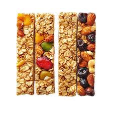

Granulo Bar
Ingredients:
- 1 cup rolled oats
- ½ cup nuts (almonds, walnuts, cashews- chopped)
- ¼ cup honey or maple syrup
- ¼ cup peanut butter (or almond butter)
- ¼ cup dried fruits (raisins, cranberries, dates- chopped)
- ½ tsp vanilla extract (optional)
- A pinch of salt
Instructions:
- Toast oats & nuts (optional): Dry roast oats and nuts in a pan for 3–4 minutes until slightly golden.
- Mix wet ingredients: In a bowl, mix honey and peanut butter. Microwave for 20 seconds to soften, then stir well.
- Combine: Add oats, nuts, dried fruits, vanilla extract, and salt. Mix until everything is well coated.
- Set in a pan: Line a small tray or dish with parchment paper. Press the mixture firmly into the pan.
- Chill: Refrigerate for at least 1 hour until firm.
- Slice into bars and store in an airtight container.
Back To Top